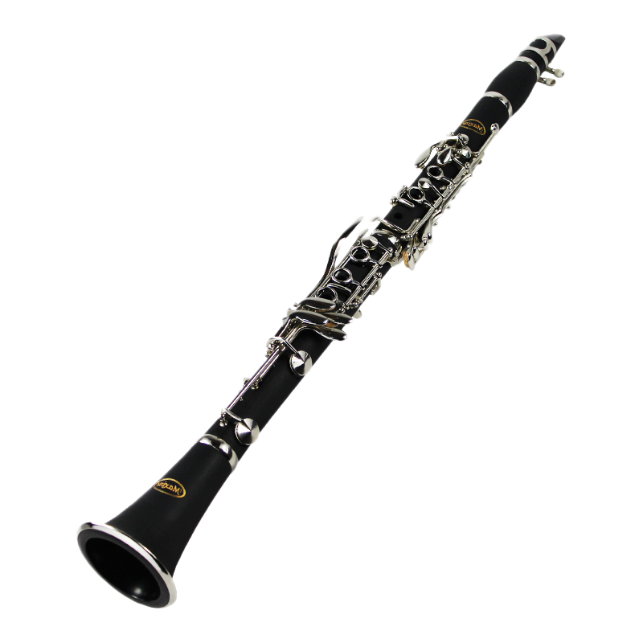

A estes instrumentistas cabem, muitas vezes, solos importantes. Sentam-se no centro da orquestra, diretamente em frente do regente, em um plano mais elevado que o das cordas. O naipe das madeiras é composto por: Flautas, Flautim, Oboé, Corne-Inglês, Clarinete, Clarone ou Clarinete baixo, fagote e Contra Fagote.
Flauta Transversal
Uma flauta transversal é um instrumento de sopro com um design elegante e fino. Ela é feita de metal ou madeira, geralmente prata, níquel ou ébano, e é composta por três partes principais: a cabeça, o corpo e o pé.
A flauta transversal pode ter diferentes tamanhos, dependendo do modelo e da preferência do músico. No entanto, a flauta transversal padrão é projetada para ser tocada por adultos e geralmente tem cerca de 67 cm de comprimento.
Flautim
O flautim, também conhecido como piccolo, é um instrumento de sopro menor e mais agudo que a flauta transversal. Ele é cerca de metade do tamanho de uma flauta transversal, geralmente com cerca de 32 cm a 34 cm de comprimento.
O flautim é feito de metal, geralmente prata, e é composto por três peças principais: a cabeça, o corpo e o pé. Ele é tocado da mesma maneira que a flauta transversal, com o músico soprando no bocal e manipulando as chaves com os dedos para produzir diferentes notas.
Oboé
O oboé é um instrumento de sopro da família das madeiras, com um comprimento de cerca de 65 cm a 67 cm. Ele é feito de madeira dura, como grenadilha ou ébano, ou de plástico, em algumas versões mais acessíveis.
O oboé consiste em três partes principais: a campânula, o corpo superior e o corpo inferior. A campânula é a parte mais larga do instrumento, e é onde o som produzido pelo oboé é projetado. O corpo superior e inferior do oboé contêm os furos onde o músico coloca os dedos para produzir diferentes notas, e são unidos pela junção.
Corne Inglês
O corne inglês é um instrumento de sopro da família das madeiras, que é um pouco maior e mais grave do que o oboé. Ele tem um comprimento de cerca de 60 cm a 65 cm, com um diâmetro ligeiramente maior do que o do oboé.
Clarinete
O clarinete é um instrumento de sopro da família das madeiras e tem um comprimento médio de cerca de 67 cm a 70 cm. Ele é feito de madeira dura, como ébano ou grenadilha, ou de materiais sintéticos, como resina.

Clarinete Baixo ou Clarone
O clarone é um instrumento de sopro da família dos clarinetes, e é considerado uma versão mais grave e grande do clarinete baixo. O tamanho do clarone pode variar dependendo do modelo e do fabricante, mas em média, ele tem cerca de 1,20 metros a 1,30 metros de comprimento.
O clarone é geralmente feito de madeira dura, como ébano ou grenadilha, e possui um bocal e uma boquilha semelhantes aos do clarinete. No entanto, devido ao seu tamanho e peso, ele requer mais esforço físico para tocar do que o clarinete.
Fagote
O fagote é um instrumento de sopro da família das madeiras, que é conhecido por sua grande extensão e seu som profundo e rico. O tamanho do fagote é consideravelmente maior do que a maioria dos outros instrumentos de sopro, com uma média de cerca de 1,40 metros a 1,50 metros de comprimento.
O fagote é composto de várias seções, incluindo a campânula, o bocal, o tudel e o corpo superior e inferior. O corpo superior e inferior do fagote contêm os furos onde o músico coloca os dedos para produzir diferentes notas, enquanto o tudel conecta o bocal à seção superior do instrumento. A campânula é a parte mais larga do instrumento, onde o som é projetado.
Contra-Fagote
Um contra-fagote é um instrumento de sopro de madeira grande e curvo que é um membro da família dos fagotes. Ele é aproximadamente duas vezes o tamanho do fagote comum e tem um som muito mais grave. O contra-fagote é construído com madeira de bordo ou de ébano e possui um grande tubo cônico dobrado em forma de "U" que se estende por cerca de 5,5 metros.